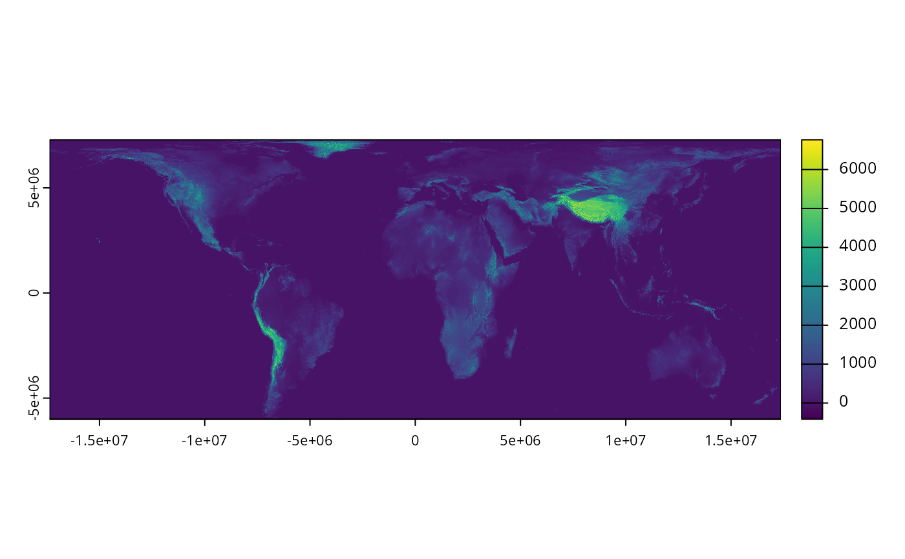

Import elevation data derived from Robinson et al. (2014). If data are not available locally, they are downloaded from a Zenodo Digital Repository (https://doi.org/10.5281/zenodo.5719984).
get_global_elevation_data(
dir = tempdir(),
version = "latest",
force = FALSE,
verbose = TRUE
)character Folder path for downloading and caching data.
By default, data are downloaded to a temporary directory (i.e.,
tempdir()). To avoid downloading the same data multiple times, it is
strongly recommended to specify a persistent storage location (see Examples
below).
character Value indicating the specific version of the
dataset
that should be downloaded. The version should be indicated using the
Digital Object Identifier of the specific version required (e.g.
"10.5281/zenodo.3673586").
Defaults to "latest" such that the latest
release of the dataset with available habitat data is used.
logical Should the data be downloaded even if the
the data are already available?
Defaults to FALSE.
logical Should progress be displayed while downloading
data?
Defaults to TRUE.
A terra::rast() object containing the elevation data
(100 m resolution). Pixel values indicate elevation (m).
The data were produced by (i) obtaining raw elevation data from EarthEnv project, (ii) collating the data into a single raster (GeoTIFF) file, and then (iii) reprojecting the data to the World Behrmannn coordinate reference systems (ESRI:54017). For further details, see the online repository containing code used to process the data.
Robinson N, Regetz J, and Guralnick RP (2014) EarthEnv-DEM90: A nearly- global, void-free, multi-scale smoothed, 90m digital elevation model from fused ASTER and SRTM data. ISPRS Journal of Photogrammetry and Remote Sensing, 87:57--67. Available at https://doi.org/10.1016/j.isprsjprs.2013.11.002
# \dontrun{
# define persistent storage location
download_dir <- rappdirs::user_data_dir("aoh")
# create download directory if needed
if (!file.exists(download_dir)) {
dir.create(download_dir, showWarnings = FALSE, recursive = TRUE)
}
# download and import elevation data
elev_data <- get_global_elevation_data(download_dir)
# preview data
print(elev_data)
#> class : SpatRaster
#> dimensions : 132926, 347351, 1 (nrow, ncol, nlyr)
#> resolution : 100, 100 (x, y)
#> extent : -17367531, 17367569, -6005523, 7287077 (xmin, xmax, ymin, ymax)
#> coord. ref. : World_Behrmann
#> source : dem-100m-esri54017.tif
#> name : dem-100m-esri54017
# plot data
plot(elev_data)

# }